Breathing Monitor
♥
--
BPM
Web Serial isn't supported in this browser.
Open this page in Chrome, Edge, or Opera instead.
Open this page in Chrome, Edge, or Opera instead.
Step 1 of 4 · Get ready
Recalibrate breathing
This runs a timed guided exercise so the sensor can relearn your baseline. It samples Normal breathing, Inhale hold, and Exhale out for 6 seconds each.
Step 2 of 4 · Get in position
Starting soon…
Relax and stay completely still. The exercise is about to start.
3
Calibrating
Normal breathing
6
0 / 18 seconds
Step 4 of 4 · Done
✓
Calibration complete
Your breathing calibration bands have been mapped successfully.
Electrode Placement

Exhale
Inhale
Holding 0.0s
ECG Signal
Peak Envelops
Inhale (−) / Exhale (+) Peak Heights